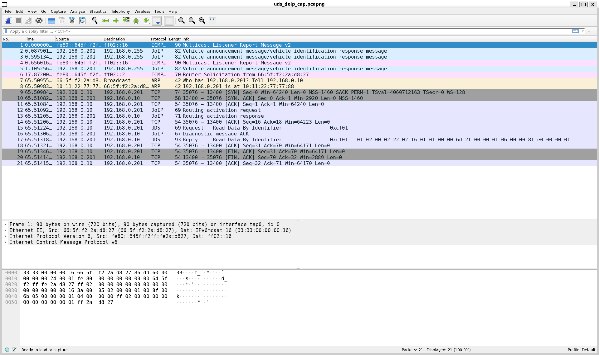

Using UDS
Previous: Working with CAN
Unified Diagnostic Services (UDS) is a widely used protocol for automotive diagnostics that is independent of the transport layer.
Take a look at the “Systems” set up from levels 4 to 7 in as described in Managing the lifecycle of components.
Run Level |
Component |
Contexts |
|---|---|---|
4 |
TransportSystem |
TASK_UDS |
5 |
DoCanSystem |
TASK_CAN |
5 |
EthernetSystem |
TASK_ETHERNET |
6 |
DoipServerSystem |
TASK_ETHERNET |
7 |
UdsSystem |
TASK_UDS |
In this example, CAN and Ethernet provide the transport layer. Note that the separation of UDS from the transport path allows multiple transports to be supported. Take time to study these “System” classes and how they interact.
UDS over CAN
If you have successfully tested the CAN setup for a POSIX platform as described in Working with CAN, try some more tests using the same setup in which…
vcan0is successfully set upapp.referenceApp.elfis running in shell terminal 1candump vcan0is running in shell terminal 2
In a third shell terminal run…
cansend vcan0 02A#0322CF0100000000
With this, cansend sends a CAN Frame with CAN ID set to 0x02A.
If you look in the code for DoCanSystem you will see it is set up with 0x02A as the CAN ID to listen for.
The payload contains the following parts…
The 1st byte of the payload (with value
0x03) is the Protocol Control Information (PCI) field for UDS over CAN. This breaks down into 2 parts..The first 4 bits indicate the frame type (
0for Single Frame)The last 4 bits indicate the length of the request (
3bytes)
The 2nd byte is the UDS Service Identifier (SID). Its value
0x22is the ID for the “Read Data By Identifier” service.The 3rd and 4th bytes make up the UDS Data Identifier (DID) with value
0xCF01identifies which data should be returned.
The CAN frame sent was actually a UDS over CAN request to “Read” the data identified by 0xCF01 and return that data.
So what response should be seen?
app.referenceApp.elf should print…
32057178: RefApp: CAN: DEBUG: [SocketCanTransceiver] received CAN frame, id=0x2A, length=8
32057178: RefApp: TPROUTER: DEBUG: TransportRouterSimple::getTransportMessage : sourceId 0xf0, targetId 0x2a
32057178: RefApp: UDS: DEBUG: Opening incoming connection 0xf0 --> 0x2a, service 0x22
32057178: RefApp: Accepted 0x22, current session: 0x1
32057178: RefApp: UDS: DEBUG: Process diag job 0x22
32057178: RefApp: Accepted 0x22cf01, current session: 0x1
32057178: RefApp: UDS: DEBUG: Process diag job 0x22CF01
32057180: RefApp: CAN: INFO: [CanSystem] CAN frame sent, id=0xF0, length=8
32058181: RefApp: DOCAN: WARN: DoCanTransmitter(CAN_0)::cyclicTask(0x2a -> 0xf0): Flow control timeout
32058181: RefApp: UDS: DEBUG: IncomingDiagConnection::terminate(): 0xf0 --> 0x2a, service 0x22
32058182: RefApp: UDS: ERROR: IncomingDiagConnection::transportMessageSent(): failed to send message from 0x2a to 0xf0
In the code for UdsSystem you can see that it instantiates ReadIdentifierFromMemory _read22Cf01
to return responseData22Cf01 for the DID 0xCF01 as follows…
uint8_t const responseData22Cf01[]
= {0x01, 0x02, 0x00, 0x02, 0x22, 0x02, 0x16, 0x0F, 0x01, 0x00, 0x00, 0x6D,
0x2F, 0x00, 0x00, 0x01, 0x06, 0x00, 0x00, 0x8F, 0xE0, 0x00, 0x00, 0x01};
...
, _read22Cf01(0xCF01, responseData22Cf01)
The log line containing Process diag job 0x22CF01 indicates that the “Read” request was interpreted correctly,
it found the job _read22Cf01 that matched the request,
then the log line containing CAN frame sent, id=0xF0, length=8
indicates it sent a CAN frame response with CAN ID 0x0F0 which is the ID DoCanSystem is set up to send responses with.
During the above, candump vcan0 should have printed…
vcan0 02A [8] 03 22 CF 01 00 00 00 00
vcan0 0F0 [8] 10 1B 62 CF 01 01 02 00
The first CAN frame is the request being send and the 2nd CAN frame is the response which breaks down as follow…
The PCI is 2 bytes this time, with value
0x101BThe first 4 bits indicate the frame type (0x1 indicates it is the 1st frame of a series)
The next 12 bits indicate the number of bytes to follow (
0x01B= 27 bytes). Note this is larger than 1 CAN Frame (max 8 bytes)
The 3rd byte is the UDS Response SID. Its value
0x62is the ID for the response for the “Read Data By Identifier” service.The 4th and 5th bytes hold the same UDS Data Identifier (DID)
0xCF01as in the request.The remaining bytes
0x010200are the 1st three bytesresponseData22Cf01.
After sending the CAN frame response app.referenceApp.elf printed…
32058181: RefApp: DOCAN: WARN: DoCanTransmitter(CAN_0)::cyclicTask(0x2a -> 0xf0): Flow control timeout
This indicates it is waiting for the client to request the next CAN Frame of the response.
cansend is a simple tool to send CAN frames, it has no knowledge of UDS and so it did not send the next expected follow-on UDS request.
What we need is a tool that implements UDS over CAN that is capable of sending the next request expected.
UdsTool, which can be found in the subdirectory referenceApp/tools/UdsTool implements exactly what we need.
Assuming you have python >= 3.7 installed, you can install UdsTool as instructed in UdsTool.
Using the same setup, with app.referenceApp.elf and candump vcan0 running in separate shell terminals,
in a third shell terminal run…
udstool read --can --channel vcan0 --txid 2A --rxid F0 --did cf01 --config tools/UdsTool/app/canConfig.json
If it works it should show output like this…
62cf01010200022202160f0100006d2f0000010600008fe0000001
<PositiveResponse: [ReadDataByIdentifier] - 26 data bytes at 0x7d9f586c2530>
In that you can see the response contains the data from responseData22Cf01.
Looking at the log output from app.referenceApp.elf you can see that this time it received a 2nd CAN Frame with ID 0x2A
sent by UdsTool after which that remaining data was sent in response in CAN frames with ID 0xF0.
37907832: RefApp: CAN: DEBUG: [SocketCanTransceiver] received CAN frame, id=0x2A, length=8
37907832: RefApp: TPROUTER: DEBUG: TransportRouterSimple::getTransportMessage : sourceId 0xf0, targetId 0x2a
37907833: RefApp: UDS: DEBUG: Opening incoming connection 0xf0 --> 0x2a, service 0x22
37907833: RefApp: Accepted 0x22, current session: 0x1
37907833: RefApp: UDS: DEBUG: Process diag job 0x22
37907833: RefApp: Accepted 0x22cf01, current session: 0x1
37907833: RefApp: UDS: DEBUG: Process diag job 0x22CF01
37907834: RefApp: CAN: INFO: [CanSystem] CAN frame sent, id=0xF0, length=8
37907883: RefApp: CAN: DEBUG: [SocketCanTransceiver] received CAN frame, id=0x2A, length=8
37907883: RefApp: CAN: INFO: [CanSystem] CAN frame sent, id=0xF0, length=8
37907916: RefApp: CAN: INFO: [CanSystem] CAN frame sent, id=0xF0, length=8
37907950: RefApp: CAN: INFO: [CanSystem] CAN frame sent, id=0xF0, length=8
37907951: RefApp: UDS: DEBUG: IncomingDiagConnection::terminate(): 0xf0 --> 0x2a, service 0x22
The output from candump vcan0 shows all details of these CAN frames…
vcan0 02A [8] 03 22 CF 01 00 00 00 00
vcan0 0F0 [8] 10 1B 62 CF 01 01 02 00
vcan0 02A [8] 30 08 20 00 00 00 00 00
vcan0 0F0 [8] 21 02 22 02 16 0F 01 00
vcan0 0F0 [8] 22 00 6D 2F 00 00 01 06
vcan0 0F0 [8] 23 00 00 8F E0 00 00 01
To learn more you can experiment with adding you own services to UdsSystem
similar to ReadIdentifierFromMemory _read22Cf01.
UDS over Ethernet (DoIP)
The DoIP implementation in the reference app currently uses DoIP version 2 as per ISO 13400-2:2012.
You can try the same example over Ethernet, provided you have successfully tested the Ethernet setup on target as described in Working with Ethernet.
Ensure ethernet interface is successfully set up and Application is running before testing DoIP.
Refer UdsTool for more details on sending request over Ethernet, installation and other available commands (Service Requests).
Note
Use the target’s IP address in the UDS tool command (see Working with Ethernet).
Ensure UdsTool version 0.0.3 or later for DoIP-2 support. Check with:
pip show udstool.
To run an example request to read 0xCF01 DID, Open a new shell terminal and run:
udstool read --eth --host 192.168.0.201 --ecu 002a --source ef1 --did cf01
Here, --host is the IP address of the ECU, and --ecu and --source are the logical
addresses of the ECU and the client respectively.
When you run this command, you should observe output similar to the previous example over CAN:
62cf01010200022202160f0100006d2f0000010600008fe0000001
<PositiveResponse: [ReadDataByIdentifier] - 26 data bytes at 0x7d9f586c2530>
However, this time you can also see the Ethernet traffic in Wireshark as follows:
{kind=link}

Next: Using hardware I/O